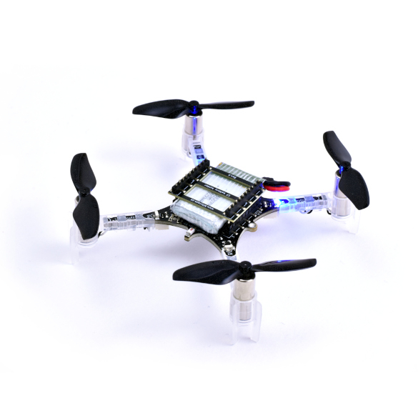

1. Practical 1: Flying Crazyflies¶
Week 1 and 2
In this first practical we are jumping in and getting hands on with flying crazyflies - manually and hopeully if we're lucky autonomously doing simple things.
1.1 Crazyflies¶

1.1.1 What are Crazyflies¶
The Crazyflie 2.1+. is a versatile open source micro-drone flying development platform that only weighs 27g and fits in the palm of your hand.
Checkout their website to learn more about them - https://www.bitcraze.io/
You will see that they are used for R&D activities all over as its a perfect platform for learning, researching and experimenting with all things drones and drone swarms in a lab setting.
1.1.2 Why are we using them¶
Inspired by aerial robotics courses from other institutions, we utilise the crazyflie as an initial teaching platform due to:
- Ease of use
- Size & Safety
- Programmability
- Large Community
Through using them, you will learn the basics of constructing a drone platform and how the various physical components fit together. This includes the drone itself but also how you might communicate with a drone through the radio.
The crazyflie comes with a nice cross-platform user interface for connecting to, configuring and monitoring a drone. This interface allows you to connect a game pad for manual flight of the crazyflie, but also there is an andriod and IOS app for manual flying of the drone over bluetooth.
Bitcraze and various research groups have released a lot of open source, freely availble code for programming the drone in python and c++, with many examples. This allows you to more easily implement and experiment with different methods of autonomy for the drone.
Finally due to the small size, there is very little chance of injury (PROVIDING YOU ARE WEARING YOUR SAFETY GLASSES) when flying, even if you do collide with something or someone. This makes it ideal for use during a tutorial with many people in a classroom setting. As you will see later, flying with anything larger will require flying within our dedicated flying arena.
1.2 Safety¶
1.2.1 Personal Safety¶
- WEAR YOUR SAFETY GLASSES AT ALL TIMES DURING THIS PRACTICAL
- It is recommended to wear long sleves and trousers
- When the drone is flying, it should always be watched
1.2.2 Battery Safety¶
-
The Drones use small Lithium-Polymer batteries and as such we must be careful
-
DO NOT DROP, PIERCE, HAMMER OR OTHERWISE DAMAGE THE BATTERIES
-
IF A BATTERY LOOKS DAMAGED DO NOT USE IT AND TELL A STAFF MEMBER
-
IF A BATTERY STARTS SMOKING OR IS ON FIRE TELL THE STAFF AND CALMLY MOVE AWAY FROM IT
We will have a metal sand bucket and long tongs and the battery will go in there
- DO NOT ATTEMPT TO PUT OUT THE FIRE YOURSELF
1.3 Practical Tasks¶
1.3.1 Preliminary Tasks¶
- Get and put on your safety glasses
- Sign out a single crazyflie and associated parts
- Clear out a designated 2x2m ish flying space
1.3.2 Main Tasks¶
- Build the crazyflie
- What are the different sensors and when should each one be used?
- Setup the software and crazy radio and connect your crazyflie
- Can you see the live sensor feed?
- Can you perform manual flight with your phone or game controller
- WATCH OUT - SMALL INPUTS NEEDED OTHERWISE IT WILL HIT THE CEILING / OTHER PEOPLE
- How does the crazyflie respond to your controls - is it sluggish? fast to react?
- How stable is the drone?
- Do you think this is a good way to control a drone?
- Using the crazyflie python library, write a simple script which (1) takesoff the drone, (2) flies to another point (3) lands
- What are the commands needed to achieve takeoff?
- How accurate is the drones takeoff height?
- How well does it fly to the other point, can you characterise it?
- How good is the landing?
- How repeatable is the flight?
- Now make the drone do something interesting
- e.g. Fly a more interesting pattern? Perform an experiment to find the accuracy of the system?
1.4 Crazyflie Build and Installation¶
The first step is to unbox your crazyflie kit and build your crazyflie!
To take you through the unboxing and first time setup, let us follow Bitcraze's own introductory tutorial which will hopefully get you to the state of flying!
Come back when you have finished bench testing and are ready to fly
Notes: Be gentle with the parts - the crazyflie is hardy but the connectors might not be! We have small tools you can borrow if needed.
To understand more about the GUI and to connect up a controller see:
1.5 Sensor Installation and Setup¶
If you have followed the tutorial, you should have a built crazyflie 2.1 which you can connect to your laptop via a crazyradio!
Then you should either have a game controller or have downloaded the app to manually fly the crazyflie.
At this point, you may have noticed that the drone doesn't have any external sensing capability. This will mean that you would to fly the drone in manual mode where you would not have any assistance from the flight controller apart from maintaining general stability.
This is different from Autonomous Ground Vehicles (UGVs) which can operate via dead-reckoning with only internal odometry. Drones however, need a method of external sensing on top of internal IMU and gyroscope in order to hover in place and not drift, especially if autonomously flying.
For commercial and custom drones there are a variety of sensors available, as will be shown in lectures, and this includes sensors like:
- Cameras (Monocular, Stereo, Depth)
- LIDAR (Single Beam, Wedge and 360)
- Laser Rangefinders
- Optical Flow Cameras
- External Position Tracking (Motion Capture, UWB, etc)
For use with the crazyflies there are several sensor add-on boards available which we may have for the tutorial.
- Loco Positioning System
- Hopefully we will have access to the loco positioning system which uses ultra wide band signals from multiple anchors placed around the room.
- This enables a tagging board on the drone to work out the drones position to centimeter level accuracy
- You will have been given a Loco Tag add-on board, this will need to be placed on top of the GPIO stack - it replaces the battery holder!
- Ensure that it is facing in the correct direction!
- With this the drone will be able to hover and know its location in the real world
- Read more about how it works here: https://www.bitcraze.io/documentation/system/positioning/loco-positioning-system/
- About General Positioning Systems and crazyflies: https://www.bitcraze.io/documentation/system/positioning/
For the anchors We will likely need to use the Time Difference of Arrival 3 (TDOA3 Mode) to enable all the drones to fly with lots more anchors - consider why this might be.
-
- This is a sensor which can be attached to the bottom of the crazyflie and provides hardware optical flow and height information
- If you don't know what Optical Flow is, it is a method of estimating horizontal motion from a camera image
- See this opencv tutorial for more information: https://docs.opencv.org/3.4/d4/dee/tutorial_optical_flow.html
- It also has a Time of Flight sensor for measuring its height above ground level
- Together these allow the drone to stabily hover in one location, and estimate its location relative to its take-off location!
- Place the sensor on the bottom of the GPIO stack on the underside of the drone
- Ensure that it is facing in the correct direction!
- Read about the usage here: https://www.bitcraze.io/documentation/tutorials/getting-started-with-flow-deck/
-
- This board has 5 distance time of flight sensors on it allowing the simple perception of the area around the drone.
- This perception gives the drone the capability to react to its surroundings and perform simple obstacle avoidance, detection, wall following and other tasks.
- It also allows to start working on environment-aware problems like Simultaneous Localization And Mapping (SLAM) algorithms.
-
- While not a sensor, its an attachment that can go on the bottom of the deck!
- These will hopefully be used for the light-show challenge
- Note that they go on the bottom and do not work at the same time as the flow deck. As a result, will need the loco positioning system to work properly.
There are a number of other sensors and other details too
- Checkout this link for a full list of expansion decks
See that link for tips on mounting the decks if confused
1.6 First time flight¶
1.6.1 Before you fly¶
At this point, the crazyflie will have no external sensors and will rely on its internal odometry to keep itself stable.
BEFORE YOU FLY PLEASE READ THE FOLLOWING
WARNING
- The drone will be in manual flight mode and will have no ability to help you fly or stabilise it will drift.
- The joysticks will be mapped directly to roll/pitch/yaw and thrust.
- The joystcks control might be quite sensitive so use small movements until you get the hang of it
- You must be as smooth as you can with your joystick control - try not to twitch in the opposite direction when something happens - this results in a hard to recover drone!
- Familiarise yourself with the location of the emergency stop if you feel uncomfortable press it at any time (the crazyflies can handle heavy landings)
To understand the coordinate system and roll pitch and yaw see the following link: - https://www.bitcraze.io/documentation/system/platform/cf2-coordinate-system/
When you are ready to fly, notify an instructor and place the crazyflie in the middle of your flying space.